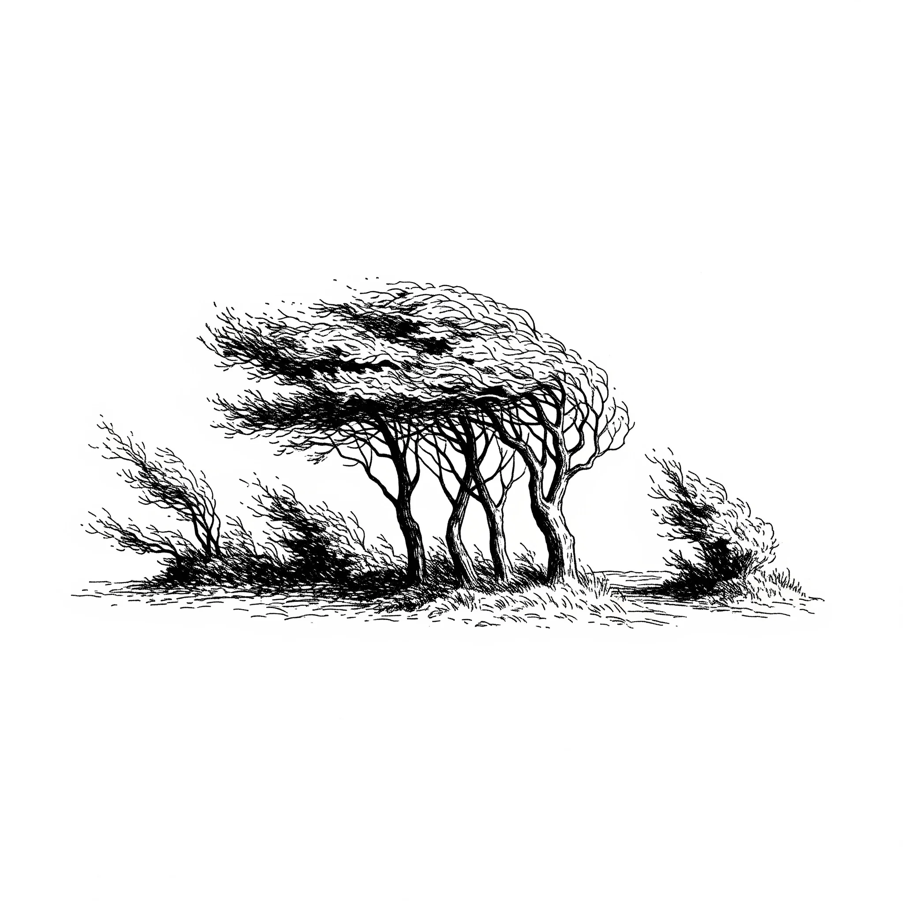

나는 휭휭 도시를 불어,\
[I whoosh and blow through the city,]
투덜투덜이들이 사는 곳을 둘러.\
[swirling past the places where the grumblers live.]
총총걸음 바쁘게, 쿵쿵마음 졸이며,\
[Scurrying with hurried steps, hearts pounding with anxiety,]
폰얼굴빛 반짝이며 꿈을 좇으려.\
[they chase their dreams by the glow of their phone-faces.]
네모상자 차를 타고, 다른 네모상자로,\
[Riding in a square box, to another square box,]
시간 팔아 돈잎을 사지, 입술은 굳은 채로.\
[selling their time to buy money-leaves, with lips set firm.]
나는 원래 도토리 씨앗을 밀어주고,\
[I used to be the one who pushed acorn seeds,]
하얀 민들레 홀씨를 불어줬어.\
[and blew the white fluff of dandelions.]
하지만 이젠 다른 것들을 쓸어주고,\
[But now I sweep up other things,]
시큼털털한 냄새만 남았어.\
[and only a sour smell is left behind.]
너덜너덜 비닐봉지, 꼴사나운 조각보,\
[A tattered plastic bag, an ugly patchwork quilt,]
하늘을 못나게 만들고 말았어.\
[it has made the sky unsightly.]
나무 꼭대기 끝에서 슬픈 노래 부르며,\
[Singing a sad song from the very treetops,]
바람에 펄럭이는 저 꼴 좀 보라고.\
[“Just look at that mess, flapping in the wind.”]
나는 고함쟁이들이 사는 곳으로 날아가,\
[I fly to the place where the shouters live,]
국경선을 두고 시끄럽게 떠드는 그곳 말이야.\
[that place where they clamor noisily over borderlines.]
가슴을 펴고 빽빽 소리치며 싸우지,\
[They puff out their chests and shriek and fight,]
누가 더 힘이 센지, 누가 약한지.\
[over who is stronger, and who is weak.]
막대기와 돌멩이로 선을 긋고 투덜대지,\
[They draw lines with sticks and stones and grumble,]
어리석은 줄도 모르고 말이야, 바보같이.\
[not even knowing how foolish they are, so stupidly.]
몇 년 뒤면 내가 휙 날려버릴 그 모든 걸.\
[All of it things I will whisk away in a few years’ time.]
나는 우울꽃들이 피어있는 창문을 훔쳐봐,\
[I peek into windows where depression-flowers bloom,]
외로운 생각들이 멈췄으면 하고 바라는 그 맘.\
[the heart that wishes the lonely thoughts would stop.]
작은 속삭임 한 마디, 따스한 눈길 한 번이면,\
[With just a small whisper, just one warm glance,]
어쩌면 멋진 춤이 시작될 수도 있는데 말이야.\
[a wonderful dance just might begin.]
하지만 두려움은 끈끈한 덫, 조용한 올가미,\
[But fear is a sticky trap, a quiet snare,]
그들을 꼼짝 못 하게 붙잡아두지, 가만히.\
[that holds them captive, perfectly still.]
그래서 나는 그들의 한숨만 모아 멀리 날려,\
[So I only gather their sighs and blow them far away,]
다른 날을 위해 고이 간직하려고.\
[to keep them safe for another day.]
그들은 삐죽삐죽 높은 탑을 짓지,\
[They build their pointy, towering spires,]
흔들흔들 모래 위에 위태롭게 서 있지.\
[standing precariously on shifting sand.]
작고 조급한, 영원하지 않은 손으로,\
[With small, hurried, mortal hands,]
소리치고 계획하며 아등바등 살아도.\
[they shout and they plan and they struggle on.]
나는 그들의 시계보다, 자물쇠보다 먼저 있었고,\
[I was here before their clocks, before their locks,]
그들의 마지막 똑딱 소리가 멈춘 후에도.\
[and I will be here after their final tick-tock ceases.]
모든 것이 부서져 녹슨 조각이 될 때,\
[When all things have crumbled into rusted pieces,]
그 먼지가 간직할 비밀들을 쓸어줄 이는,\
[the one who will sweep up the secrets held by the dust,]
바로 나일 거라고.\
[that will be me.]